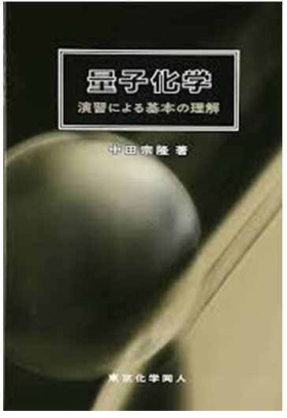
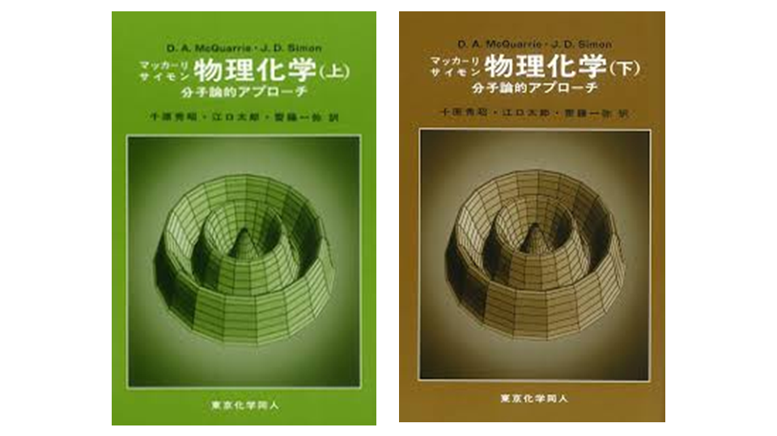
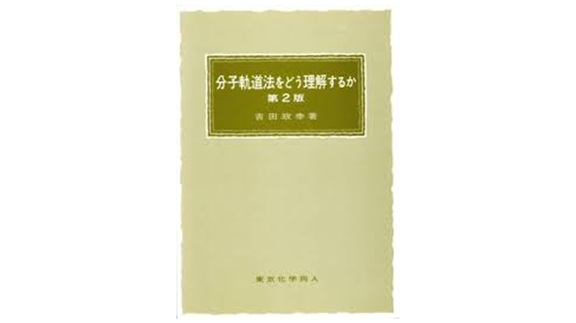
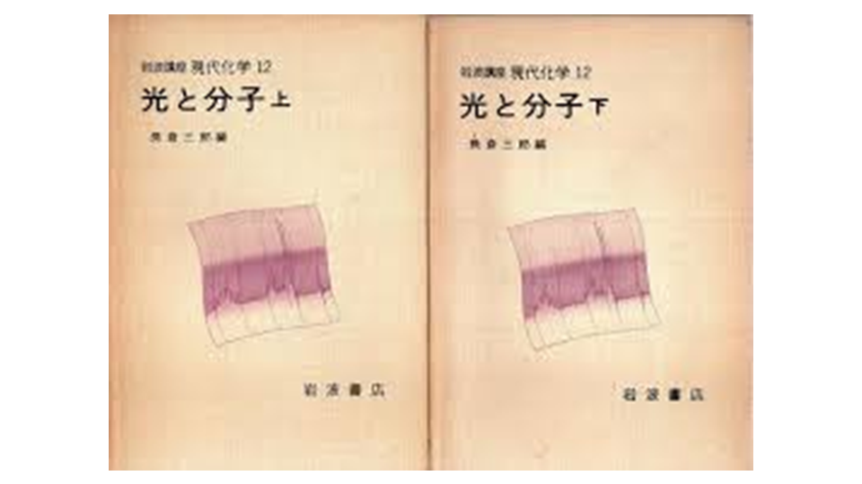
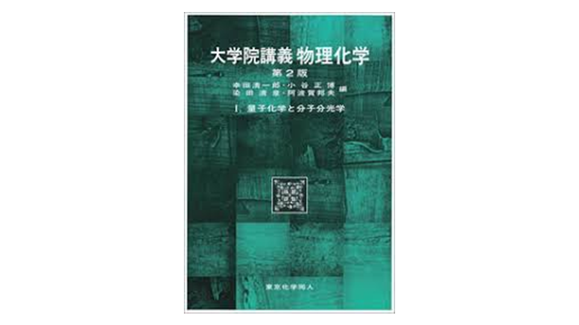
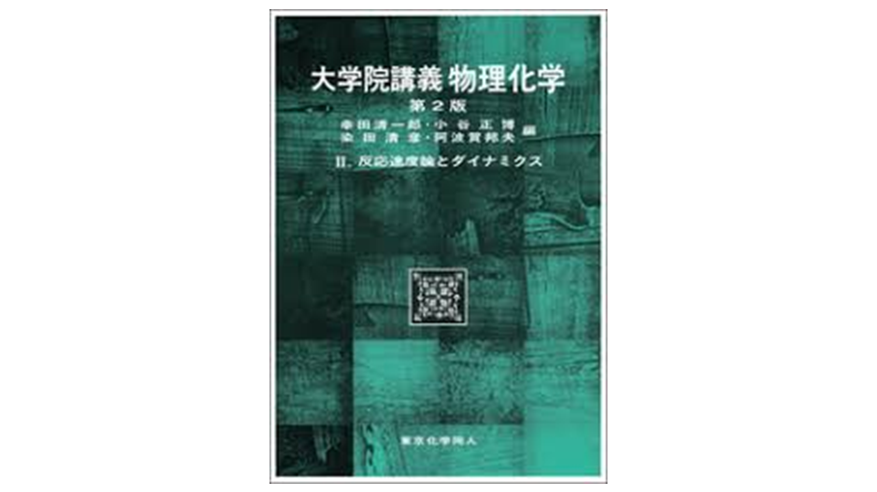
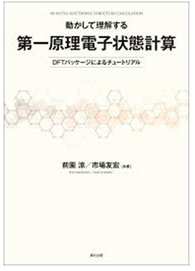

量子化学
量子化学の入門書。
2021/11に読了Physical & Quantum Chemistry
そのうち書き直すかも。
May be rewritten later.
Loved Books

量子化学の入門書。
2021/11に読了
まずは量子力学の特有の概念の説明から始まり、LCAO近似や変分法、水素原子、2原子、そして多原子分子とヒュッケル法の解説まで。特に量子力学の導入と、分光法の解説が丁寧であることが特徴。
2022/3あたりに読了量子力学の基本から多原子までの数式が丁寧に解説された本。入門的な本の後に読むのは最適。また、下巻の群論の解説が丁寧なのが特徴的。
2022~2023に読了
これは分子軌道法という量子力学の化学への応用について解説された本。量子力学では全ての電子の波動関数が1つの関数で記述され解として求まるが、これでは定性的な理解につながらない。これを、1電子の波動関数→化学結合の波動関数→分子全体、と段階的に組み立て、見落とした相互作用をad hocに取り入れる。また、hartree fock方程式の導出も解説。
2022~2023に読了
これはラマン分光法の理解のために読んだ。
マクスウェル方程式がベクトルポテンシャルを利用して解け、これを量子化することで電磁場が量子化できることがわかる。最後に、光と分子の間の相互作用を摂動で扱い、2次以上の項から多光子過程が導出されることを見る。その一例としてラマン分光がある。ラマン分光までを最短距離で理解できる絶好の本だが、絶版していることが唯一の欠点。復刊を願う。
2023/03に読了
1巻は量子化学と分光法についての解説。量子化学は主に、全電子についてのシュレーディンガー方程式をいかに1電子についての式に帰着するか?を見る。演算子を導入して電子の交換の観点から簡潔に式変形が説明されている。正直オーバーワークではあった...高度な量子力学なので、量子力学の本を読んだ方が良いかも。
2022~2023に読了
主にマーカス理論を理解するために利用した。統計力学による定式化や、溶媒の分極に関する熱力学的な過程を作る方法が開設されている。分野の本が少ない為、希少な本。ちなみに、この部分を執筆されている森田明弘先生は東北大学理学部化学科教授。
2024
これは東京工業大学(現:サイエンス・トーキョー)の化学系サークルのゼミで勉強した。主に材料系を志向した内容だったが、量子化学計算の別の扱いが知れたのは良かった。DFT計算では汎関数と基底関数系の選択をengineeringするが、これでは汎関数とエネルギー幅の設計という問題に帰着していて基底関数系という概念がないのが発見だった。
2023に読了